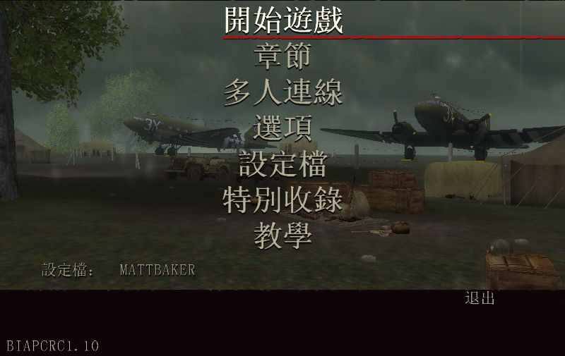
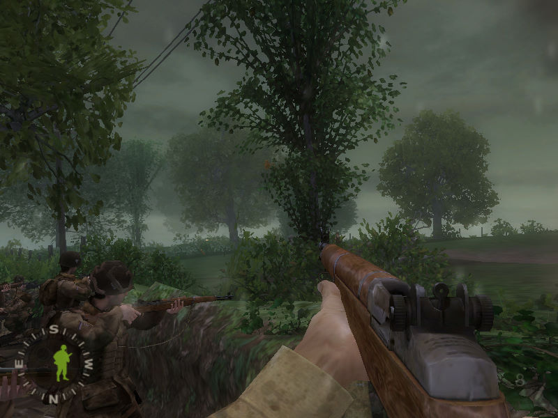

名稱：榮耀戰場1／戰火回憶錄1／兄弟連1／戰火兄弟連1：光榮之路／前進30高地／進軍30高地
(Brothers in Arms: Road to Hill 30，中文／英文版)
簡介：Gearbox 2005年出品的第一人稱射擊遊戲，由Ubisoft代理發行，台灣則由松崗中文化
並代理發行 [待補]。


保護：光碟SafeDisc 4.00
檔案：brothers_in_arms_retail_1.11_us_uk.rar = 英文1.11更新檔
nocd111.rar = 英文1.11免光碟檔
cht110.rar = 1.10繁中漢化檔